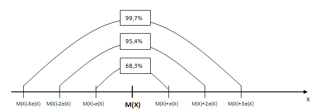

Глава 4. Финансовая математика и статистика
1 – 22 Простой процент
23 — 29 Определения
30 — 39 Вычисление будущей стоимости при начислении сложного процента
40 - 49 Вычисление настоящей стоимости при начислении сложного процента
50 — 53 На какой период нужно положить деньги. Решаем подбором. Ответ всегда целон число.
54,55,56,57,58,59 Какую ставку начислял банк
60 - 70
71 – 85 Однотипные задачи на облигации
86,87,88,89 Бескупонные облигации
90 Теория вероятности
4.2.113 НЕТ ВЕРНОГО ОТВЕТА
[1]
[2]
[3]
[4]
[5]
[6]
[7]
[8]
[9]
[10]
[11]
[12]
[13]
[14]
[15]
[16]
[17]
[18]
[19]
[20]
[21]
[22]
[23]
\[ FV = PV \times (1+r)^n \]
\[ \text{выражение} (1+r)^n - \text{называется коэффициентом наращения} \]
\[ FV - \text{будущая стоимость}; PV - \text{настоящая стоимость}; r - \text{процентная ставка} \]Где r – это процентная ставка за период начисления процента, выраженная в долях единицы, под которую размещается текущая стоимость (если начисление происходит раз в полгода, то она в два раза меньше годовой);
n – это общее количество начислений процентов (если начисление происходит раз в полгода, то это количество полугодий, которое вклад лежит в банке).
[24] Формула
\[ FV = PV \times (1+r)^n \]используется при вычислении будущей стоимости при начислении сложного процента.
[25] В формуле
\[ FV = PV \times (1+r)^n \]PV - это настоящая стоимость.
[26] В формуле
\[ FV = PV \times (1+r)^n \]FV - это будущая стоимость.
[27] В формуле
\[ PV = \frac{FV} {(1+r)^n} \]
\[ \text{величина} \frac{1}{(1+r)^n} - \text{называется коэффициентом дисконтирования} \][28] В формуле
\[ FV = PV \times (1+r)^n \]r - это cтавка процента, выраженная в долях единицы, под которую размещается текущая стоимость.
[29] В формуле
\[ FV = PV \times (1+r)^n \]n - число периодов начисления процентов по ставке r.
[30]
\[ FV = PV \times (1+r)^n \]
\[ FV = 20000 \times (1 + 0.09)^2 = 23762 \]
[31]
\[ FV = PV \times (1+r)^n \]
\[ FV = 20000 \times (1 + 0.12)^3 = 28098.56 \approx 28099 \]
[32]
\[ FV = PV \times (1+r)^n \]
\[ FV = 2000 \times (1 + \frac{0.08}{4})^{12} = 2536.4835 \approx 2536.48 \]
[33]
\[ (1+r)^n = (1 + \frac{0.099}{4})^4 = 1.1027 \]
\[ (1+r)^n = (1 + \frac{0.098}{12})^{12} = 1.1025 \]
[34]
\[ FV = PV \times (1+r_1)\times(1+r_2)\times(1+r_3) \]
\[ FV = 1000 \times (1+0.1)\times(1+0.09)\times(1+0.08) = 1294.92\]
[35]
\[ FV = PV \times (1+r_1)\times(1+r_2) \]
\[ FV = 10000 \times (1+0.2)\times(1+0.3) = 15600 \]
[36]
\[ FV = PV \times (1+r_1)\times(1+r_2)\times(1+r_3) \]
\[ FV = 10000 \times (1+0.2)\times(1+0.3)\times(1+0.25) = 19500 \]
[37]
\[ FV = PV \times (1+r)^n \times (1 + r \times \frac{90}{365})\]
\[ FV = 2000 \times (1+0.08)^3 \times (1 + 0.08 \times \frac{90}{365}) = 2569.1222 \approx 2569.12 \]
[38]
\[ FV = PV \times (1 + r \times \frac{30}{365}) \times (1+r)^n \times (1 + r \times \frac{90}{365}) \]
\[ FV = 2000 \times (1 + 0.08 \times \frac{30}{365}) \times (1+0.08)^3 \times (1 + 0.08 \times \frac{90}{365}) = 2586.0150 \approx 2586.02 \]
[39]
\[ FV = PV \times (1+r)^n + PV \times (1+r) + PV \times (1+r) \]
\[ FV = 10000 \times (1+0.1)^3 + 10000 \times 0.1 + 10000 \times 0.1 = 15 310 \text{ руб.} \]
\[ \text{процентов} = 15310 - 10000 = 5310 \text{ руб.} \]
[40]
\[ PV = \frac{FV} {(1+r)^n} \]
\[ PV = \frac{10000} {(1+0.12)^2} = 7971.9387 \approx 7972 \]
[41]
\[ PV = \frac{FV} {(1+r)^n} \]
\[ PV = \frac{10000} {(1+\frac{0.1}{4})^8} = 8207.4657 \approx 8207.47 \]
[42]
\[ PV = \frac{FV} {(1+r)^n} \]
\[ PV = \frac{21074} {(1+0.12)^3} = 15000.05 \approx 15000 \]
[43]
\[ PV = \frac{FV} {(1+r)^n} \]
\[ PV = \frac{28732} {(1+0.13)^2} = 22501.37 \approx 22501 \]
[44]
\[ PV = \frac{FV} {(1+r)^n} \]
\[ PV = \frac{36600} {(1+0.1)^4} = 24998.29 \approx 25000 \]
[45]
\[ PV = \frac{FV} {(1+r)^n} \]
\[ PV = \frac{32542} {(1+0.11)^2} = 26411.81 \approx 26412 \]
[46]
[47] PV = 12 000 / [(1 + 0,12) * (1 + 0,12*0,9)] = 9 670 руб
[48]
[49]
[50]Решаем подбором. Ответ всегда целое число.
15000*1.2 = 1800018000*1.2 = 21600
Ответ: 2 года.
[51] Решаем подбором. Ответ всегда целое число.
15000*1.4 = 2100021000*1.4 = 29400
29400*1.4 = 41160
Ответ: 3 года.
[52]
10000*1.09 = 10900
10900*1.09 = 11881
Ответ: 2 года.
[53]
1000000*1.045 = 1045000
1045000*1.045 = 1092025
Ответ: 1 год.
[54]
\[ FV = PV \times (1+r)^n \]
\[ 4 \times PV = PV \times (1+r)^8 \]
\[ 4 = (1+r)^8 \Rightarrow r = \sqrt[8]{4}-1 = 0.1892 \]
[55]
\[ FV = PV \times (1+r)^n \]
\[ 2 \times PV = PV \times (1+r)^2 \]
\[ 2 = (1+r)^2 \Rightarrow r = \sqrt[2]{2}-1 = 0.4142 \]
[56]
\[ FV = PV \times (1+r)^n \]
\[ 3 \times PV = PV \times (1+r)^2 \]
\[ 3 = (1+r)^2 \Rightarrow r = \sqrt[2]{3}-1 = 0.7320 \]
[57]
\[ FV = PV \times (1+r)^n \]
\[ 2 \times PV = PV \times (1+r)^4 \]
\[ 2 = (1+r)^4 \Rightarrow r = \sqrt[4]{2}-1 = 0.1892 \]
[58]
\[ FV = PV \times (1+r)^n \]
\[ 3 \times PV = PV \times (1+r)^4 \]
\[ 3 = (1+r)^4 \Rightarrow r = \sqrt[4]{3}-1 = 0.3160 \]
[59]
\[ FV = PV \times (1+r)^n \]
\[ 24000 = 10000 \times (1+r)^2 \]
\[ 2.4 = (1+r)^2 \Rightarrow r = \sqrt[2]{2.4}-1 = 0.5491 \]
[60]
[61]
\[ \text{простой процент } FV_Б = PV \times (1 + r_Б + r_Б) \]
\[ \text{сложный процент } FV_А = PV \times (1 + r_А)^4 \]
\[ PV \times (1 + r + r) = PV \times (1 + r_А)^4 \Rightarrow r = \sqrt[4]{1.24}-1 = 0.05525 \approx 5.53\text{%} \]
[62]
\[ \text{простой процент } FV_Б = PV \times (1 + r_Б + r_Б) \]
\[ \text{сложный процент } FV_А = PV \times (1 + r_А)^4 \]
\[ PV \times (1 + 0.15 + 0.15) \times 1.1 = PV \times (1 + r_А)^4 \Rightarrow r = \sqrt[4]{1.43}-1 = 0.0935 \approx 9.35\text{%} \]
[63]
\[ \text{простой процент } FV_Б = PV \times (1 + r_Б + r_Б + r_Б) \]
\[ \text{сложный процент } FV_А = PV \times (1 + r_А)^6 \]
\[ PV \times (1 + 3 \times r) = PV \times (1 + 0.15)^6 \Rightarrow r = \frac{(1 + \frac{0.15}{2})^6-1}{3} = 0.1811 \approx 18.11\text{%} \]
[64]
[65]
[66]
[67]
[68]
[69]
[70]
[71]
[72]Рассчитайте рыночную стоимость облигации номиналом 18000р, ставкой выплачиваемого ежегодно купонного дохода 12% и сроком погашения 3 года, если ставка процента по вкладу в банке составляет 14% годовых.
Решение:
Покупая облигацию, вы покупаете право получать купоны каждый год до погашения, и номинальную стоимость вместе с последним купоном в момент погашения. Значит, для определения рыночной цены облигации необходимо сложить эти денежные потоки, предварительно дисконтировав их на сегодняшний день. Ставкой дисконтирования при этом принимают равной ставке по кладу в банке. Эта же ставка называется так же «альтернативной годовой доходностью», и «доходностью к погашению облигации».
Определим стоимость облигации через современную стоимость будущих доходов (выплат) по облигации, исходя из ставки банковского процента\[ \text{купон} = 18000 \times 0.12 = 2160 \] \[ P = \frac{2160}{(1+0.14)} + \frac{2160}{(1+0.14)^2} + \frac{18000+2160}{(1+0.14)^3} \] \[ P = 1894.73 + 1662.05 + 13607.42 \approx 17164.2\]
[73,74,75,76,77,78,79,80,81,82,83,84,85] см [72]
[86]
\[ \text{уравнение } \frac{N}{(1+r)^2} = \frac {2N}{(1+r)^3 } \Rightarrow \frac{(1+r)^3}{(1+r)^2} = 2 \Rightarrow r = 1 \]
[87,88,89] см. [86]
[90]
[91]
[92]
[93]
[94]
[95]
[96]
[97]
[98]
[99]
[100]
[101]
[102]
[103]
[104]
[105]
[106]
[107]
[108]
[109]
[110]
[111]
[112]
[113]
[114]
[115]
[116]
[117]
[118]
[119]
[120]
[121]
[122]
[123]
\[ r(x,y) = \frac{ K(X,Y)}{ \sigma (X) \times \sigma (Y)} \]
\[ r - \text{коэффициент корреляции}; \sigma - \text{стандартное отклонение}; K - \text{ковариация} \]
\[ r = \frac{ 120}{ 30 \times 20} = 0.2 \]
[124] Риск портфеля обычно выражается через дисперсию, которую здесь и потребуется найти.
Дисперсия портфеля, состоящего из двух активов определяется по формуле:
Риск = (уд.вес А)^2*стан.откл.А)^2+уд.вес В)^2 * стан.откл.В)^2 + 2 * уд.вес А * уд.вес В * коэф.корр. \[ \text{Риск } = \theta_A^2 \sigma_A^2 + \theta_B^2 \sigma_B^2 + 2 \cdot \theta_A \theta_B \cdot r(A,B) \]
0.4^2*20^2 + 0.6^2*30^2+2*0.4*0.6*120 = 445.6
[125] С=n!/(k!*(n-k)!), где n- общее множество значений, k - количество элементов
[126] Через год цена акции может иметь следующее распределение:
| Цена акции | 30 руб | 40 руб | 50 руб |
| Вероятность | 30% | 60% | 10% |
Определить математическое ожидание цены акции через год.
Решение: M(X) = 30*0.3+40*0.6+50*0.1 = 9+24+5 = 38
[127]
[128]
[129,145,146,147] Доходность актива за 3 года представлена в таблице:
| Годы | 1 | 2 | 3 |
| Доходность | 10 | 14 | 18 |
Определить риск актива, представленный показателями выборочной дисперсии и стандартного отклонения доходности.
Решение:\[ E(\text{среднее}) = \frac{10+14+18}{3} = 14 \] \[ D(\text{дисперсия}) = \frac{(10-14)^2+(14-14)^2+(18-14)^2)}{3} = 10.67 \] \[ \sigma = \sqrt{D} = \sqrt{10.67} = 3.27% \]
[130] 
[131]
\[ r = \frac{ 435}{ 32 \times 41} \approx 0.332 \]
[132]
\[ K(X,Y) = r(x,y) \times \sigma (X) \times \sigma (Y) \]
\[ r - \text{коэффициент корреляции}; \sigma - \text{стандартное отклонение}; K - \text{ковариация} \]
\[ K = 0.65 \times 25 \times 34 = 552.5 \]
[134,135,136] Используем свойства коэффициента корреляции. Например, для [135] при возрастании доходности А доходность В падает, значит связь есть и обратная. Раз связь есть, то коэффициент корреляции не ноль, раз обратная – то он отрицателен.
[137] P(A)*P(B)*P(C) = 0,8*0,7*0,9 = 0.504
[138] P = (1 - 0,8 ) * 0,7 * (1 - 0,9) = 0,014
[139]
«Вырастет доходность акций хотя бы одной компании» = все исходы, кроме такого, где все доходности не вырастут.
P(все доходности одновременно не вырастут) = (1-0,8)*(1-0,7)*(1-0,9) = 0,006
Вероятность всех исходов, кроме такого, где все доходности не вырастут = 1-0,006 = 0,994
[140] Даны 3 актива. Известно, что ожидаемая доходность первого актива X = 30%, ожидаемая доходность второго актива Y = 20%. Определить ожидаемую доходность актива Z, если известно, что Z=9X-6Y+80.
Решение: Z = 9*30 - 6*20 + 80 = 230
[141] Найти дисперсию случайной величины Z=6Х-3Y+5, если известно, что случайные величины X и Y независимы и D(X)=2,5, D(Y)=2.
Решение: Независимы -> корреляции нет. Z = 36*D(X) + 9*D(Y) + 0 = 90 - 18 = 108
[142,143,144] Доходность портфеля
Прогноз инвестора относительно возможных сценариев доходности акций компаний А и В с учетом их вероятностей в следующем периоде представлен в таблице:
| r_b=10% | r_b=20% | |
| r_a=10% | p1=10% | p1=40% |
| r_a=40% | p1=30% | p1=20% |
Определить ожидаемую доходность портфеля, если уд. веса акций А и В в портфеле составляют соответственно 40% и 60%.
Добавляем веса акций в таблицу
| r_b=10%*0.6=6% | r_b=20%*0.6=12% | |
| r_a=10%*0.4=4% | p1=10% | p1=40% |
| r_a=40%*0.4=16% | p1=30% | p1=20% |
Пересчитываем вероятности с учетом весов акций.
| r_b=10%*0.6=6% | r_b=20%*0.6=12% | |
| r_a=10%*0.4=4% | p1=(4+6)*10% | p1=(4+12)*40% |
| r_a=40%*0.4=16% | p1=(16+6)*30% | p1=(16+12)*20% |
Итого: 10*0.1+16*0.4+22*0.3+28*0.2= 1 + 6.4 + 6.6 + 5.6 = 19.6%
[145, 146, 147] см. [129]
[148,149] см. [132]
[150] Показатель Р/Е может использоваться для предоставления возможности сравнивать рыночные стоимости акций компаний одной отрасли.
[151] Смысл показателя Р/Е это количество лет при текущем уровне прибыли, которое потребуется компании для того, чтобы окупить цену своих акций.
[152]
[153] Текущая доходность облигации показывает, какую долю составляет купон в рыночной цене облигации. Находится простым делением ставки купона на рыночную цену облигации, выраженную в процентах от номинала. 10/75 = 13.33%
[154] 9.5/98 = 9.69%
[155] Решение.Чистая прибыль компании = 975 тыс. руб. Из этих денег компания должна выплатить дивиденды по привилегированным акциям в размере 20%*1000р = 200 руб. на одну привилегированную акцию. Так как количество привилегированных акций = 2000, то общая сумма выплат по префам составит 200р * 2000 = 400 тыс. Таким образом, чистой прибыли остается 975 – 400 = 575 тыс. руб.
EPS= 575 000/ 10 000 = 57,5 руб.
[156] Дивидендная доходность показывает текущую доходность акций. Дивидендная доходность= дивиденд на акцию/ текущая рыночная цена акции. 50/3000 * 4 = 6.66%
[157] Доходность к погашению для бескупонной облигации:
\[ r(\text{доходность к погашению}) = (\frac{N}{P})^{\frac{1}{T}} - 1\]
\[ 0.11 = (\frac{1000}{X})^{\frac{1}{5}} - 1\]
$$ 1.11^5 = \frac{1000}{X} $$
$$ X = \frac{1000}{1.11^5} = 593.45 \approx 593.5 $$
[158] см. 157